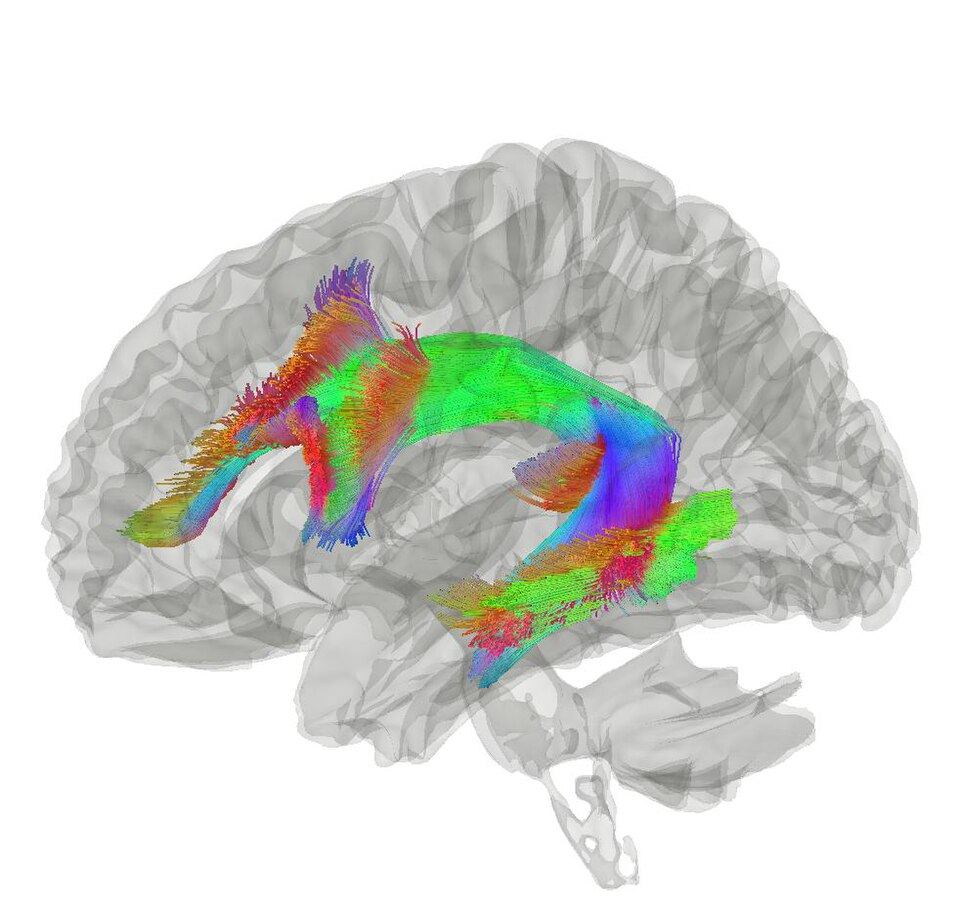

활꼴다발 (Arcuate fasciculus)

쉽게 풀면
말을 이해하는 영역과 말을 만들어 내는 영역은 서로 떨어져 있다. 활꼴다발은 측두엽 뒤쪽에서 출발해 마루엽 아래를 돌아 전두엽으로 이어지는 활 모양 섬유 다발로, 이 두 영역을 연결한다고 설명된다. 이 연결이 끊기면 말은 이해하고 말할 수도 있지만 들은 말을 그대로 따라 하기가 어려워진다.
왜 중요한가
언어 기능을 영역이 아니라 연결의 문제로 보는 관점을 대표하는 구조라 언어 신경과학의 기본 항목이다. 확산영상 기술이 발전하면서 개인차와 언어 능력, 회복 예후를 연결하는 연구가 활발하다.
어디에 있고 어떻게 생겼나
활꼴다발은 각 반구에서 뒤쪽 측두엽과 아래 이마엽을 잇는 백질 다발로 위세로다발과 나란히 달린다. 고전적으로 브로카 영역과 베르니케 영역을 잇는 것으로 알려졌으나, 이 모델은 대체로 지나친 단순화로 여겨지며 대안이 없어 계속 쓰인다. 확산 MRI 연구는 섬유가 생각보다 넓게 끝난다고 시사하며, 앞쪽 끝은 주로 브로드만 44영역에 속한 전운동 피질에 있다.
맡은 기능
언어의 이중 경로(두 흐름) 모델에서 활꼴다발은 감각-운동 사상에 관여하는 배쪽이 아닌 등쪽 경로의 한 다발이다. 다만 이 모델의 세부는 논쟁이 크다. 고전 설명은 전도 실어증을 이 다발의 손상에 따른 단절로 보았다. 베르니케가 1874년 『실어증 증후군』에서 감각 언어 체계와 운동 언어 체계의 단절로 이 증후군을 예측했다.
연구에서 다루는 방식
전도 실어증은 유창하고 문법이 유지되며 이해가 비교적 보존되지만 단어와 문장의 따라 말하기가 특히 어렵다. 손상은 대개 왼쪽 측두-두정 영역에 있고, 이 다발이 아닌 피질 손상이 더 큰 역할을 한다는 영상 연구도 있어서 이 연결을 확정적으로 쓰면 안 된다. 논문에서는 확산 텐서 영상의 추적 방법과 다발의 끝점 정의를 밝혀 적는다.
논문에서는 이렇게 쓰입니다
예시 문장
아래 예문은 용어의 쓰임을 보이려고 만든 것으로, 실제 논문 문장이 아니다.
백질 연결의 보존 정도가 언어 기능 회복을 예측한다는 영상 기반 예후 연구의 서술이다.
이 문장은 뇌졸중을 겪은 뒤 말하는 능력이 잘 돌아온 환자일수록, 언어를 담당하는 두 영역을 잇는 신경 다발이 그만큼 덜 손상되어 남아 있었다는 것을 보여 준다는 뜻이다.
조금 더 깊게 보면
고전적으로는 베르니케 영역과 브로카 영역을 직접 잇는 단일 다발로 그려졌지만, 확산영상 연구들은 측두엽-마루엽, 마루엽-전두엽으로 이어지는 간접 경로가 함께 존재하는 다중 갈래 구조를 제시한다. 좌반구에서 더 크고 발달한 편측 비대칭이 흔히 보고되며, 이 비대칭 정도와 언어 능력의 관계가 자주 분석된다. 다발의 경계 설정 기준이 연구마다 달라 결과 비교에 주의가 필요하다는 점도 방법론 논문에서 지적된다. 활꼴다발은 전통적으로 브로카 영역과 베르니케 영역을 잇는 단일 직통 경로로 설명되어 왔지만, 확산텐서영상 연구를 통해 직접 성분과 하두정엽을 경유하는 간접 성분으로 나뉘는 것이 밝혀졌고, 언어의 이중경로 모델에서는 활꼴다발이 음운-조음 매핑을 맡는 배측 경로를, 극외포(extreme capsule) 경유 섬유가 의미 처리를 맡는 복측 경로를 이룬다.
주의할 점
트랙토그래피로 그려진 다발은 확산 신호에서 추정한 결과이지 실제 축삭을 직접 본 것이 아니다. 활꼴다발의 범위와 종착점은 분석 방법에 따라 달라질 수 있으므로 단정적으로 서술하지 않아야 한다.
활꼴다발 손상이 곧 실어증을 일으킨다고 단순화하기 쉽지만, 임상적으로는 전도실어증(따라 말하기 장애가 두드러지고 이해와 자발화는 비교적 보존)이라는 비교적 드문 특정 유형과 연관된다.
참고 문헌
- Wikipedia contributors. (n.d.). Arcuate fasciculus. Wikipedia.
- Wikipedia contributors. (n.d.). Conduction aphasia. Wikipedia.